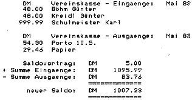

80-Bus Journal |
November 1983 · Ausgabe 10/11 |
spartanisch bis vorsintflutlich. Gut finde ich die Moeglichkeit des Decompilierens eines Forth Wortes aus dem Dictionary, womit man bei unbekannter Funktion auf die Source des Wortes schliessen kann. Der NAS-Forth Autor verlangt dafuer noch mal # 5 extra nur fuer ein Listing dieser Funktion. Der Hull Forth Benutzer erfaehrt ebenfalls, wie man eigene Strukturen wie REPEAT WHILE usw. selbst integriert, anhand von Beispielen, die aber mit Fehlern abgedruckt worden sind. Insgesamt hat man aber mehr Informationen ueber den internen Aufbau von FORTH als bei der NAS-Forth Version. Beim Lernen von Forth ist aber die automatische Stack Anzeige beim NAS-Forth nuetzlich, mit der man sofort die Wirkungsweise der elementaren Stackmanipulationsbefehle testen kann.
An dieser Stelle sei mir ein kritisches Wort zum aktuellen Forth Fieber gestattet:
Fuer mich ist eine Programmiersprache nur Mittel zum Zweck und kein Selbstzweck. In diesen Forth Interpretern/ Compilern sehe ich weder den Vorzug einer erhoehten Ausfuehrungsgeschwindigkeit (in meinen Beispielen war Pascal um Groessenordnungen schneller), noch den Vorzug einer kuerzeren Programmierzeit. Da es praktisch nicht moeglich ist, die Forth Screen vernuenftig zu editieren, steigt der Aufwand an Tipparbeit. Die in der Literatur stets erwaehnte Maschinennaehe und die damit verbundene Transparenz fuer den Benutzer kann ich nur teilweise nachvollziehen. Vielmehr stellen moderne Pascal Compiler wie das Hisoft Pascal oder BLS Pascal eine Fuelle von hardwareorientierten Funktionen und Assemblerschnittstellen zur Verfuegung, dass ich auf die fuer mich umstaendlich wirkende Programmierarbeit mit Forth verzichten werde.
Mein Eindruck ist, dass in beiden Faellen der ‚FORTH Entwickler‘ sich ein 8080 Forth besorgt und recht schlampig an den Nascom angepasst hat. So ist der gesamte Opcode Befehlsvorrat des Hull Forth Compilers nur:
JP, JP Z, JP NZ, LD HL,nnnn, CALL adr, RET.
Etwas duerftig, finde ich!
Wer sich dennoch unerschrocken in das Forth Abenteuer stuerzen will, sollte sich erst einmal mit dem bereits veroeffentlichten T-Forth des Hernn Klement beschaeftigen, um zu pruefen, ob diese Art des Programmierens ueberhaupt gewuenscht wird (und man spart Geld).
Zu Hoffen bleibt dann nur noch, dass diese beiden Forth Versionen ( beide V 1.1 !! ) fuer den Nascom nicht den zukuenftigen Software Standard bestimmen werden.
Hier nun endlich wieder etwas für unsere BASIC- Fans. Vielleicht ist die Anwendung auch für einen „Löter“ oder „Maschinensprachler“ interessant, der dazu einmal wieder zum BASIC greift, zumal es ja mit Maschinencode vermischt ist.
Zwei „Käferchen“ seien gleich zuvor genannt:
Zeile 50: CLEAR (1000): CLS Zeile 8336: IFT<32THENGOSUB200:RETURN
Folgendes Programm wurde auf Nascom2 mit Nassys1 erstellt. Es belegt C80- ca. 4A00 mit Maschinenprogrammen und BASIC. 4F00- 4FFF ist Kontenspeicherbereich, und 5000- 8FFF ist RAM für Daten.
Dies kann in den Zeilen 200 bis 245 geändert werden. Das Programm ist so angelegt, daß man nur die Daten allein unter Nassys abspeichern kann. Es berechnet selbst die Adressen für den W-Befehl. Dabei werden die Daten sehr wirtschaftlich im RAM abgelegt, d.h. wenige Buchungen ergeben ein schnelleres Abspeichern.
Das Programm sollte evt. bei Vereinen, kleinen Geschäften, 80-Bus-Journal-Verwaltungen, Haushalt etc. einsetzbar sein.
Ein kleiner Auszug eines gedruckten Beleges:
Beim allerersten Initiieren des Programmes muß zweimal das „n“-Kommando gegeben werden, um den Saldospeicher auf Null zu setzen. Wenn das Menü nichts anderes verlangt, wird zur Fortsetzung des Programms eine beliebige Taste gedrückt.
Das BASIC ist auf 2000 zu begrenzen.
| Seite 45 von 52 |
|---|